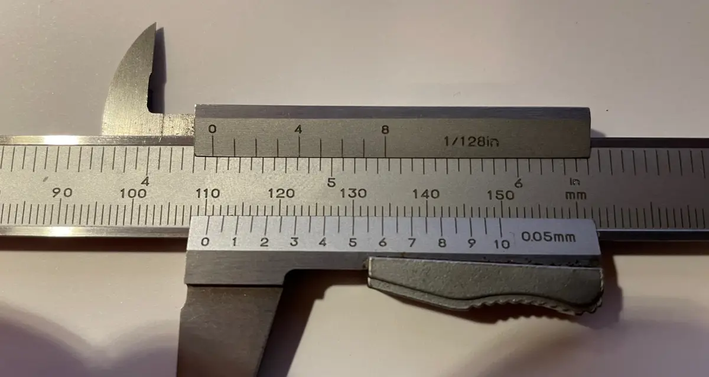
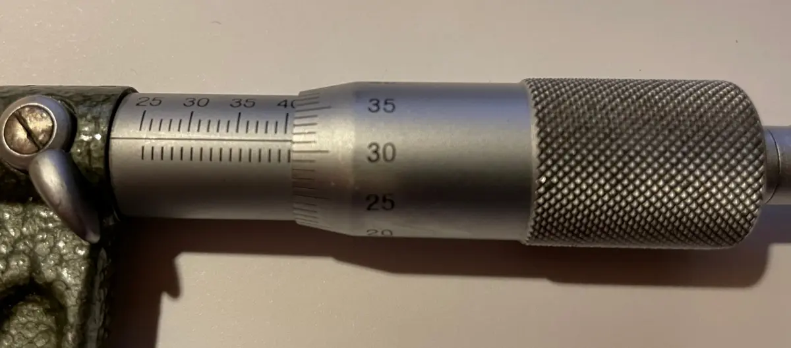

Repeter: Verktøy 1Verktøy 2MaskinelementerSammenføyingMaterialer og miljø
Oppgavebank · Produksjon og tjenester · Vg1
Bygget på tre prøver: «Prøve desember» (spørsmål 20–33), «Oppgaver skjæredata» og «Avsluttende teoriprøve programfag». Spørsmål som ble like, er slått sammen. Bilder fra nettet er byttet med egne tegninger; skyvelære- og mikrometerbildet er fra «Prøve desember».
| Mål (Produksjon og tjenester) | Oppgave |
|---|---|
| 3 Verktøy, måleverktøy, maskiner, lese tegning | 3, 4, 12, 13, 16, 19–24, 30 |
| 5 Demontere og montere maskinelementer | 1, 2, 5, 6, 7, 8 |
| 6 Beskrive arbeid ut fra tegning og prosedyre | 3, 19 |
| 7 Materialegenskaper | 25, 26, 27, 28 |
| 9 Termisk, kjemisk og mekanisk sammenføying | 7, 9, 10, 11 |
| 11 Digitale hjelpemidler og tabeller | 2, 4, 5, 6, 14, 15, 18, 19 |
| Utenfor PT-målene (står i prøven) | 29 (hører til Konstruksjon, styring og tilvirkning) |
Fasit for turtall bruker midten av vc-området (S355 HM 230, rustfritt HM 160, messing HSS-bor 60 m/min). Godta svar som passer med vc eleven har valgt. Verkstedhåndboka har ikke vc for dreiing med HSS, så de spørsmålene er byttet med hardmetall og HSS-bor. j6 finnes ikke i håndboka, derfor js6.
Sjekk avlesningen av bildene: skyvelæret 110,60 mm og mikrometeret 40,81 mm (bekreftet av Håkon).
1 Slå opp i Verkstedhåndboka.
2 Skriv mål i mm.
| M24: M betyr | metrisk ISO-gjenge |
| M24: 24 betyr | ytre diameter 24 mm |
| UNF 1/2-20: UNF betyr | Unified fin (tommegjenge) |
| UNF 1/2-20: 1/2 betyr | diameter ½ tomme |
| UNF 1/2-20: 20 betyr | 20 gjenger per tomme |
Hvilke gjenger brukes mest?
Slå opp i Verkstedhåndboka 6.1.
| Stigning M16 | 2 mm |
| Stigning M16×1,5 | 1,5 mm |
| Stigning M16×1 | 1 mm |
Hvilken er grovgjenge?
Bor for M16 (Verkstedhåndboka 3.10):
| Kjernehullbor | Ø 14 |
Sett tallene 1–5 i riktig rekkefølge. Slå opp boret i Verkstedhåndboka 3.10.
| Nr. | Arbeid |
|---|---|
| 3 | Senk hullet (lag fas) |
| 1 | Merk opp og kjørn |
| 4 | Gjeng med tapp 1, 2 og 3 i svingjernet, med skjærevæske |
| 2 | Bor kjernehullet, Ø 8,5 |
| 5 | Rengjør og prøv med en skrue |
Hva heter håndtaket du holder gjengetappen i?
En skrue M20, fasthetsklasse 8.8, friksjon µ = 0,12. Slå opp i Verkstedhåndboka 5.2.
| Moment | 416 Nm |
Hva bruker du en momentnøkkel til?
Akselen er Ø50. Slå opp sporet i Verkstedhåndboka 5.7 (DIN 471).
| Spordiameter d₂ | 47 mm |
| Sporbredde m | 2,15 mm |
Akselen er Ø60. Slå opp kilesporet i Verkstedhåndboka 5.5 (passfeder).
| Sporbredde b | 18 mm |
| Spordybde i akselen t₁ | 7 mm |
| 🔩 Løsbar | 🔥 Ikke løsbar | |
|---|---|---|
| Skrue og mutter | ✗ | |
| Sveis | ✗ | |
| Nagle | ✗ | |
| Sikringsring | ✗ | |
| Lim | ✗ | |
| Kile | ✗ |
Radiallager tar krefter på tvers av akselen.
Aksiallager tar krefter langs akselen.
Glidelager: hva gir lang levetid? Skriv så mange du kan.
| Statisk | Dynamisk | |
|---|---|---|
| En hylle som bærer en kasse | ✗ | |
| En aksel som roterer med vekslende last | ✗ | |
| En bro med tog som kjører over | ✗ | |
| En skrue som holder en plate i ro | ✗ |
1 Gassen eller dekket beskytter smelta mot lufta.
2 Riktig metode til riktig jobb.
Hva gjør dekket på elektroden? Skriv så mange du kan.
| Dekkgassveising med inert gass (argon) | MIG |
| Dekkgassveising med aktiv gass (CO₂-blanding) | MAG |
Fordeler med elektrodesveising?
Nevn tre sveisefeil.
| 1 | porer |
| 2 | sprekker |
| 3 | bindingsfeil / slagg / sidekutt |
Sømmen har mange små hull (porer). Hva kan årsaken være?
Plasmaskjæreren kan skjære i … Skriv så mange du kan.
1 Slå opp vc, bruk midten av området.
2 Regn n = vc · 1000 / (π · D).
| 1 | spindeldokke |
| 2 | chuck |
| 3 | sleide med stålholder |
| 4 | bakdokke |
| 5 | vange |
| 6 | ledeskrue og matestang |
Nevn tre jobber du gjør med bakdokken.
| Begrep | Hva er det? | Enhet |
|---|---|---|
| Kuttdybde ap | hvor dypt stålet skjærer | mm |
| Mating f | hvor langt stålet flytter seg per omdreining | mm/omdr |
| Omdreining n | hvor mange ganger emnet går rundt per minutt | o/min |
| Skjærehastighet vc | farten i ytterkanten av emnet/verktøyet | m/min |
Bruk tabellen «Skjærehastighet vc» i Verkstedhåndboka 3.11.
| Dreie S355 med hardmetall | 180–280 m/min |
| Dreie rustfritt med hardmetall | 120–200 m/min |
| Bore messing med HSS-bor | 40–80 m/min |
| Bore S355 med HSS-bor | 20–30 m/min |
Bruk midten av vc-området. Regn med formelen i Verkstedhåndboka 3.2, eller les av nomogrammet i Verkstedhåndboka 3.13.
| Materiale | Verktøy | vc (m/min) | D (mm) | n (o/min) |
|---|---|---|---|---|
| S355 | Hardmetall | 230 | 24 | ca. 3050 |
| S355 | Hardmetall | 230 | 30 | ca. 2440 |
| S355 | Hardmetall | 230 | 60 | ca. 1220 |
| S355 | Hardmetall | 230 | 200 | ca. 366 |
| Rustfritt | Hardmetall | 160 | 100 | ca. 509 |
| Rustfritt | Hardmetall | 160 | 140 | ca. 364 |
| Messing | HSS-bor | 60 | 20 | ca. 955 |
Du bytter til et større bor. Turtallet må bli …
Hvorfor?
Bor med konisk tange kan ikke settes i en chuck. Hvordan festes de?
Du skal bore Ø35. Hva gjør du? Sett ring.
Hva gjør skjærevæsken? Skriv så mange du kan.
Hva betyr det at et hull er forsenket?
1 Grunnmål + avvik = grensemål.
2 Stor bokstav = hull, liten bokstav = aksel.
| A | øvre avvik |
| B | nedre avvik |
| C | toleranse |
| D | grunnmål (basismål) |
Øvre grensemål er det største målet som er godkjent. Nedre grensemål er det minste.
Ø30 H7: stor H betyr
Ø30 h7: liten h betyr
Hvorfor må du vite toleransen før du maskinerer?
Bruk Verkstedhåndboka 2.2. Skriv i mm.
| Øvre avvik | Nedre avvik | Øvre grensemål | Nedre grensemål | Toleranse | |
|---|---|---|---|---|---|
| Ø42 H7 | +0,025 | 0 | 42,025 | 42,000 | 0,025 |
| Ø30 h7 | 0 | −0,021 | 30,000 | 29,979 | 0,021 |
| Ø92 js6 | +0,011 | −0,011 | 92,011 | 91,989 | 0,022 |
| Ø18 M5 | −0,004 | −0,012 | 17,996 | 17,988 | 0,008 |
Mål uten toleranse: se Verkstedhåndboka 2.5 (ISO 2768-m).
| Toleranse på lengden 120 | ± 0,3 mm |
| Toleranse på lengden 40 | ± 0,3 mm |
| Materiale | automatstål |
| Overflateruhet | Ra 3,2 µm |
| Mating med nesradius 1,2 mm (Verkstedhåndboka 3.1) | 0,35–0,6 mm/omdr |

| Målet er | 110,60 mm |

| Målet er | 40,81 mm |
Hvilket måleområde har dette mikrometeret?
| Måle 1/10 mm | skyvelære |
| Måle 1/100 mm | mikrometer |
| Riktig måletemperatur | 20 °C |
Skruen bak på mikrometeret (skralle / friksjonsskrue). Hva er den til?
Hva brukes passbiter til? Skriv så mange du kan.
1 Lettmetall: lav densitet. Tungmetall: høy densitet.
2 Herding gjør stål hardt, anløping gjør det seigere.
| 🪶 Lettmetall | 🧱 Tungmetall | |
|---|---|---|
| Aluminium | ✗ | |
| Bly | ✗ | |
| Magnesium | ✗ | |
| Kobber | ✗ | |
| Titan | ✗ | |
| Jern | ✗ |
💡 Slå opp densiteten i Verkstedhåndboka 7.1 hvis du er usikker.
Du varmer stålet til det er rødglødende og bråkjøler det i vann eller olje.
Da blir stålet hardt, men også sprøtt.
Derfor anløper vi: varmer det litt opp igjen, så det blir seigere.
| A | elastisk område |
| B | flytegrense |
| C | brudd |
Hva er flytegrensen?
| 💥 Ødelegger prøven | 🔍 Uten å ødelegge (NDT) | |
|---|---|---|
| Strekkprøving | ✗ | |
| Slagprøving (Charpy) | ✗ | |
| Penetrant (rødsprit) | ✗ | |
| Magnetpulver | ✗ | |
| Ultralyd | ✗ | |
| Røntgen | ✗ | |
| Bøyeprøving | ✗ |
Nevn tre legeringselementer i stål.
| 1 | krom |
| 2 | nikkel |
| 3 | molybden / mangan / vanadium |
| 💨 Pneumatikk | 🛢️ Hydraulikk | |
|---|---|---|
| Bruker luft | ✗ | |
| Bruker olje | ✗ | |
| Gir svært stor kraft | ✗ | |
| Rask og ren, men fjærende | ✗ | |
| Lekkasje gir søl | ✗ |
Nevn 10 håndverktøy vi bruker i TIF-fagene.
Mer øving: Klar for bestått? · Skyvelære og mikrometer · Skjæredata-simulatoren · Toleranse-simulatoren · Momentnøkkel-simulatoren · Gjenge-simulatoren · Strekkprøve-simulatoren